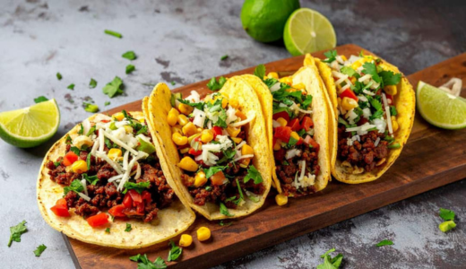
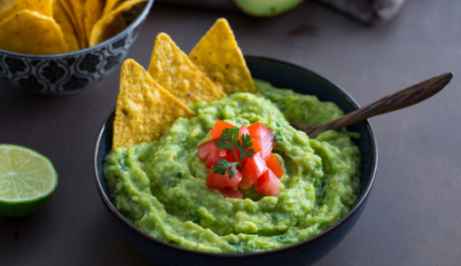
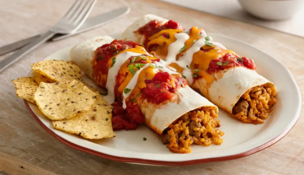

México
Tacos
Ingredientes:
- Tortilhas de milho ou trigo
- Carne moída, frango ou carne desfiada
- Cebola
- Tomate
- Alface
- Queijo
- Temperos: sal, pimenta, cominho, páprica
- Limão
Modo de preparo:
- Refogue a carne com os temperos.
- Aqueça as tortilhas.
- Monte: carne + tomate + cebola + alface + queijo.
- Esprema um pouco de limão por cima.

Guacamole
Ingredientes:
- 2 abacates maduros
- 1 tomate picado
- ½ cebola picada
- Coentro (opcional)
- Suco de 1 limão
- Sal
Modo de preparo:
- Amasse o abacate.
- Misture tomate, cebola e limão.
- Acerte o sal e misture tudo.
- Sirva com tortilhas ou tacos.

Enchiladas
Ingredientes:
- Tortilhas
- Frango desfiado
- Molho de tomate
- Queijo ralado
- Cebola
- Molho picante (opcional)
Modo de preparo:
- Recheie as tortilhas com frango.
- Enrole e coloque em uma assadeira.
- Cubra com molho de tomate e queijo.
- Leve ao forno até gratinar.

Quesadillas
Ingredientes:
- Tortilhas
- Queijo (muçarela ou cheddar)
- Frango desfiado (opcional)
- Orégano
Modo de preparo:
- Coloque queijo e o recheio dentro da tortilha.
- Dobre ao meio.
- Grelhe dos dois lados até o queijo derreter.
Chiles en Nogada
(Versão simplificada)
Ingredientes:
- Pimentões grandes (ou pimentas poblanas, se tiver)
- Carne moída
- Cebola
- Tomate
- Frutas picadas (maçã ou pera - opcional)
- Molho: creme de leite + nozes trituradas + sal
Modo de preparo:
- Refogue a carne com cebola, tomate e frutas.
- Asse os pimentões e retire a pele.
- Recheie os pimentões com a carne.
- Cubra com o molho de creme com nozes.
 VOLTAR
VOLTAR